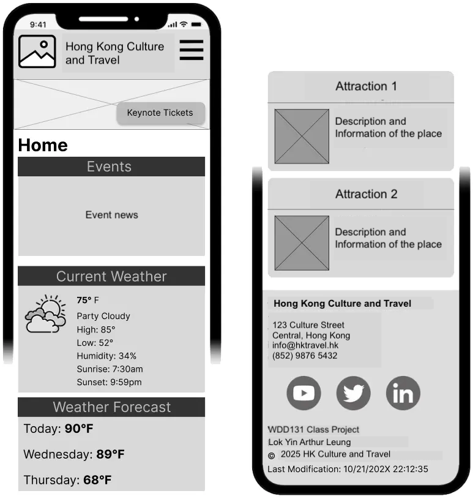
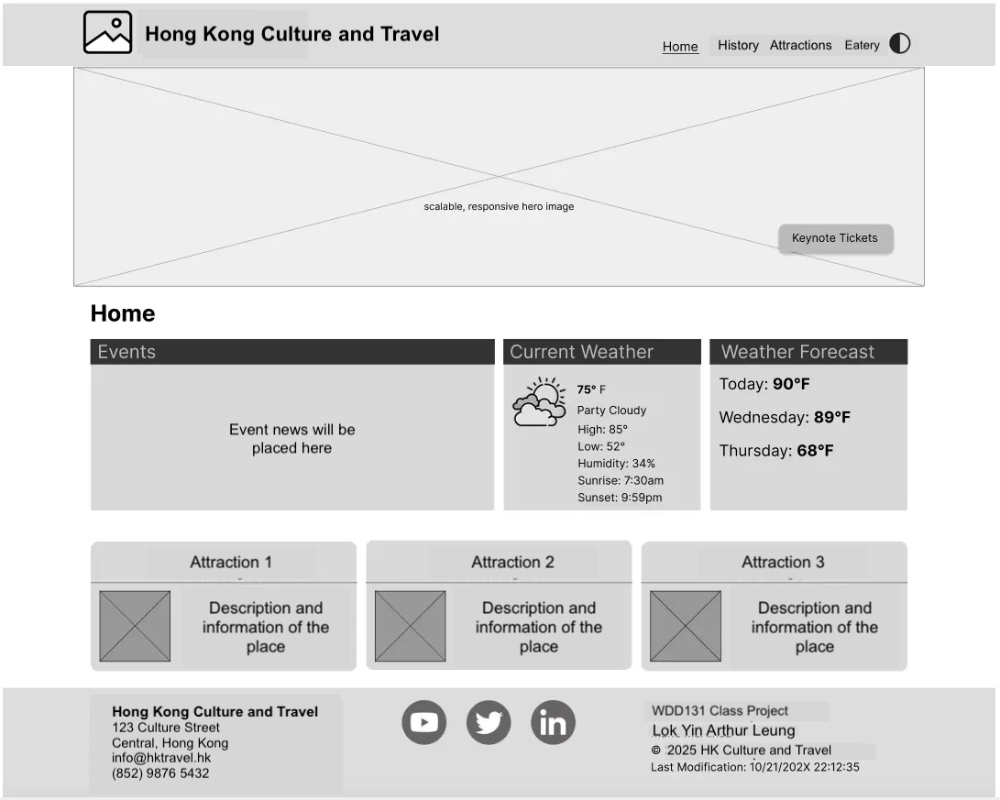

Site Name
Hong Kong Culture and Travel
Domain: HongKongCultureTravel.html
I chose this name because it directly reflects the site’s focus on promoting Hong Kong’s rich culture and travel attractions, making it clear and appealing to visitors interested in exploring the city.
Site Purpose
The website will provide an overview of Hong Kong’s unique culture, including its blend of Eastern and Western influences, popular traditions like dim sum dining and the Mid-Autumn Festival, and highlights of its modern skyline. It will also feature a travel guide section with top attractions such as Victoria Peak, Ocean Park, and Victoria Harbour, travel tips, and a photo gallery showcasing the city’s vibrant street life and scenic views.
Scenarios
-
What are the top cultural experiences to explore in Hong Kong for a first-time visitor?
This question will drive content about Hong Kong’s cultural highlights, such as dim sum dining, the Mid-Autumn Festival, and visits to temples, catering to travelers seeking an authentic cultural experience.
-
Where are the best places to visit in Hong Kong for a family vacation?
This scenario will guide content about family-friendly attractions like Ocean Park, Victoria Peak, and Victoria Harbour, along with travel tips for families visiting Hong Kong.
Color Schema
The color schema for this site includes two main colors:
-
Primary Color: Red (#DE2910)
Used for headings, buttons, and accents to reflect the vibrant energy of Hong Kong, inspired by its flag.
-
Secondary Color: Light Gray (#F0F0F0)
Used as the background color to provide a clean, neutral backdrop that highlights content.
Example
Header
Body
Typography
Primary Font: Montserrat (sans-serif)
- Usage: Used for all headings to provide a bold, modern look.
- Applied to: Headings (h1, h2, h3).
- Example: Hong Kong Culture
Secondary Font: Roboto (sans-serif)
- Usage: Used for body text, lists, and links for readability and consistency.
- Applied to: Paragraphs, lists, links.
- Example: Explore Hong Kong’s vibrant culture and attractions.
Wireframe
Mobile View:
Desktop View:
